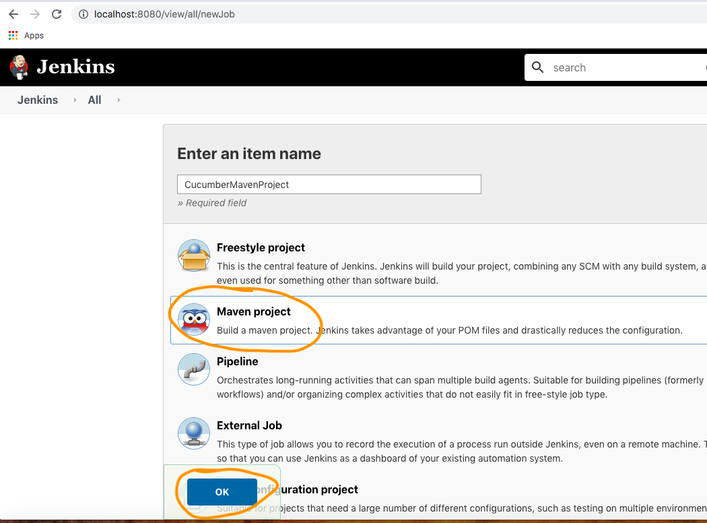

We should have below prerequisite:
#Java / JDK installed in system.
#Maven Installed in Machine
#Jenkins Installed in Machine
#My project in GIT repository
Do below Jenkins Configuration for Java JDK and Maven path. Go to Jenkins Configuration and set these
two paths as below.

Create a Maven Jenkins project as below.

Click on 'This project is parameterized check box' ,Set feafure files and Tags as choice
parameter.
Set to your GIT url as below with GIT credentials.
Go to Pre Build --> execute cell and write below command
# Note here '$FeatureFile' is parameterized where FeatureFile is
Chioce parameter feature file name.
How to run it from Jenkins?Below Jenkins run will execute only 'stringConcat.feature' file.
How to pass both 'feature file' and 'TAG' as parameter?
# Note here '$FeatureFile' & '$TAG' are parameterized where FeatureFile is
Chioce parameter feature file name and '$TAG' is tag name from Chioce parameter.
How to run it from Jenkins?Below Jenkins run will execute only 'stringConcat.feature' file
having @addition tags.
Jenkins Test Report will be like below:
How to run all feature file with all Tags?Both options should be blank selection.